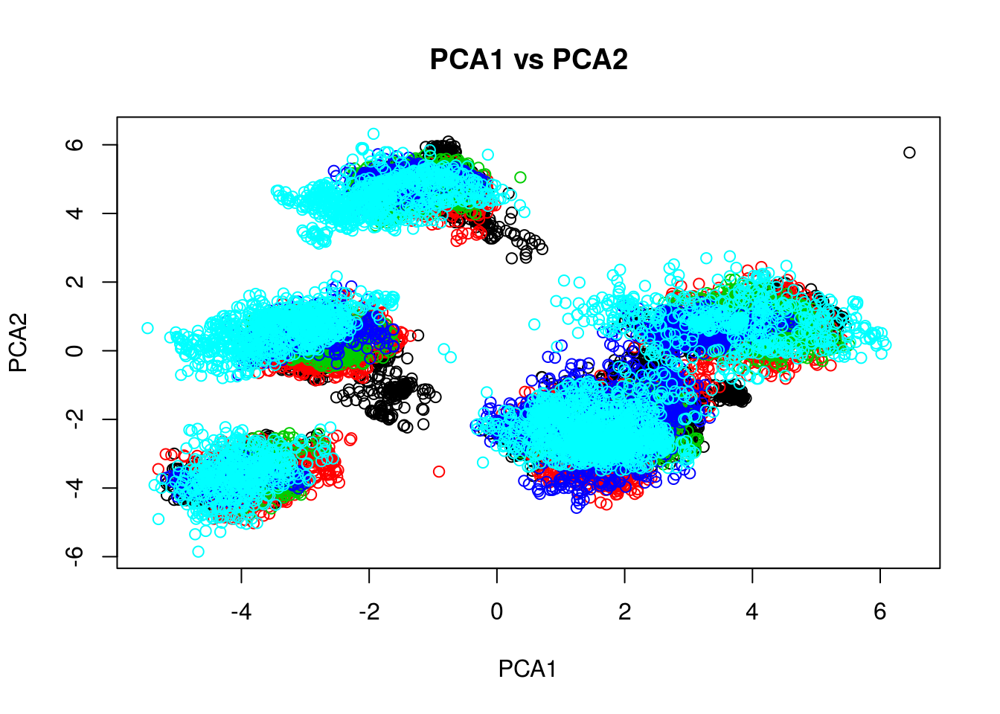
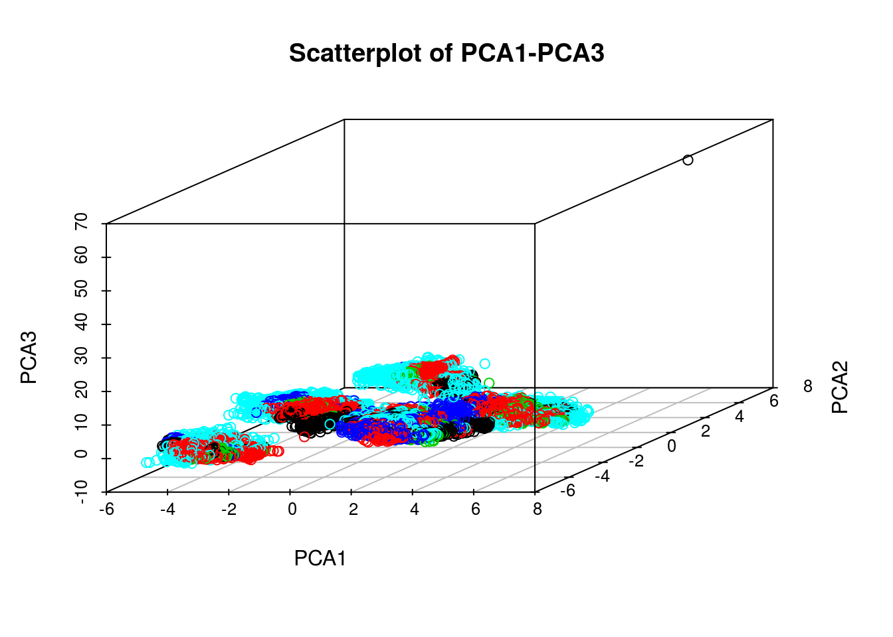
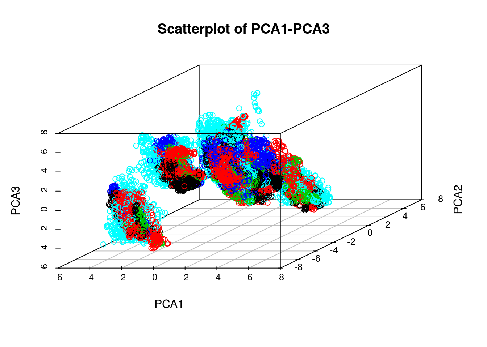

In this project we attempt to use data from accelerometers placed on the forearm and arm of and on a dumbbell lifted by volunteers to predict how well or poorly they performed barbell lifts. There were five ways (A-E) in which lifts could be performed and an algorithm will be used to predict from the accelerometer data which category their lift falls into.The data will be cleaned, analyzed, and used to train several algorithms on a large training set. The algorithm with the best training-set performance is found. A prediction is made on how well it should perform on a testing set. However, it will not be evaluated on the provided testing set since the testing set does not contain the outcome variable (A-E) and there is no way of evaluating how well the algorithm performs on it. I suspect this part of the exercise is left for the course quiz.
setwd("~/ds/PracticalMachineLearning/CourseProject")
rawtraining<-read.csv("pml-training.csv",stringsAsFactors=FALSE)
rawtesting<-read.csv("pml-testing.csv",stringsAsFactors=FALSE)
# Define non-numeric fields to be left out of the cleaning procedure
leave<-c("X","user_name","raw_timestamp_part_1","raw_timestamp_part_2",
"cvtd_timestamp","new_window","problem_id","num_window","classe")
# Clean up empty spaces, #DIV/0! by turning the string fields into numeric
# This will result in numeric columns, with NA replacing empty spaces and "#DIV/0!"
training<-rawtraining
testing<-rawtesting
for (n in names(rawtraining)){
if (! n %in% leave){
suppressWarnings(training[,n]<-as.numeric(training[,n]))
suppressWarnings(testing[,n]<-as.numeric(testing[,n]))
}
}
# Take out variables unavailable in the testing set - these columns are NAs in every test case
# and it would be pointless to estimate a model with them only to be unable to apply it
# to the testing set
usenames<-c()
for (n in names(testing)){
if (sum(is.na(testing[,n]))<20 & !(n %in% leave)){
usenames<-c(usenames,n)
}
}
# Predictors to be used:
print(usenames)## [1] "roll_belt" "pitch_belt" "yaw_belt"
## [4] "total_accel_belt" "gyros_belt_x" "gyros_belt_y"
## [7] "gyros_belt_z" "accel_belt_x" "accel_belt_y"
## [10] "accel_belt_z" "magnet_belt_x" "magnet_belt_y"
## [13] "magnet_belt_z" "roll_arm" "pitch_arm"
## [16] "yaw_arm" "total_accel_arm" "gyros_arm_x"
## [19] "gyros_arm_y" "gyros_arm_z" "accel_arm_x"
## [22] "accel_arm_y" "accel_arm_z" "magnet_arm_x"
## [25] "magnet_arm_y" "magnet_arm_z" "roll_dumbbell"
## [28] "pitch_dumbbell" "yaw_dumbbell" "total_accel_dumbbell"
## [31] "gyros_dumbbell_x" "gyros_dumbbell_y" "gyros_dumbbell_z"
## [34] "accel_dumbbell_x" "accel_dumbbell_y" "accel_dumbbell_z"
## [37] "magnet_dumbbell_x" "magnet_dumbbell_y" "magnet_dumbbell_z"
## [40] "roll_forearm" "pitch_forearm" "yaw_forearm"
## [43] "total_accel_forearm" "gyros_forearm_x" "gyros_forearm_y"
## [46] "gyros_forearm_z" "accel_forearm_x" "accel_forearm_y"
## [49] "accel_forearm_z" "magnet_forearm_x" "magnet_forearm_y"
## [52] "magnet_forearm_z"# Add predicted variable to final set of variables to be kept.
usenames<-c(usenames,"classe")
# Create "cleaner" training/testing sets
training<-training[,which(names(training) %in% usenames)]
testing<-testing[,which(names(testing) %in% usenames)]
# Convert the predicted variable to a factor. Testing does not contain classe..
training$classe<-as.factor(training$classe)
ltrain<-length(names(training))Here we try to make some sense of the predictor variables, massaging the data to iron out anything deemed to make model estimation more difficult.
See if we have any near-zero-variation predictors. We look ok:
nzv<-nearZeroVar(training,allowParallel=TRUE,saveMetrics = TRUE)
print(paste("nzv:",length(nzv$zeroVar)-sum(!nzv$zeroVar)))## [1] "nzv: 0"Look at predictor correlations greater than 0.8. We have 19 pairs of super-correlated predictors!
M<-abs(cor(training[,-ltrain]))
diag(M)<-0
corr_pred<-which(M > 0.8,arr.ind=T)
# Number of correlated pairs of predictors:
print(paste(as.character(c(dim(corr_pred)[1]/2)),"highly correlated predictors"))## [1] "19 highly correlated predictors"We take care of this redundant information using Principal Component Analysis. PCs are linearly uncorrelated.
library(scatterplot3d)
# Get principal components, take a look in 2D: PC1 vs PC2 (we excitedly see five
# clusters at first (b/w version not shown) but then this is confusing when
# we color the plot by predicted "classe" variable
pca<-prcomp(training[,-ltrain],scale=TRUE)
plot(x=pca$x[,1],pca$x[,2],col=training[,"classe"],xlab="PCA1",ylab="PCA2",main="PCA1 vs PCA2")
# Still hopeful, we plot all predictors' (PC1,PC2,PC3) tuplets. No separation yet
# but we do see one extreme outlier on in the top right corner
scatterplot3d(x=pca$x[,1],y=pca$x[,2],pca$x[,3],
color=as.integer(training$classe),
main="Scatterplot of PCA1-PCA3",xlab="PCA1",ylab="PCA2",zlab="PCA3")
# Let's take a look at the PCs' distributions to spot any other problems, then nip # the outlier problem in the bud..
# I am looking at the gaps between 3rd quartile maximum value.
# Take a look PC3 and PC4's 3rd Quartile vs. Max - the gap is huge
summary(pca$x)[c(1,2,5,6),]## PC1 PC2 PC3
## Min. :-5.4682 Min. :-5.853039 Min. :-5.6482
## 1st Qu.:-2.6434 1st Qu.:-2.421564 1st Qu.:-1.4764
## 3rd Qu.: 2.3582 3rd Qu.: 1.108274 3rd Qu.: 1.4814
## Max. : 6.4588 Max. : 6.319989 Max. :62.8200
## PC4 PC5 PC6
## Min. : -3.39332 Min. :-4.63305 Min. :-11.4810
## 1st Qu.: -0.48467 1st Qu.:-1.33617 1st Qu.: -1.2706
## 3rd Qu.: 0.50595 3rd Qu.: 1.17562 3rd Qu.: 1.2576
## Max. :261.30913 Max. : 7.00631 Max. : 4.5332
## PC7 PC8 PC9
## Min. :-4.25598 Min. :-4.98311 Min. :-5.27595
## 1st Qu.:-1.03052 1st Qu.:-0.94953 1st Qu.:-0.90867
## 3rd Qu.: 0.94594 3rd Qu.: 0.96488 3rd Qu.: 0.87259
## Max. : 6.24058 Max. : 7.35815 Max. : 4.66880
## PC10 PC11 PC12
## Min. :-4.35817 Min. :-6.80306 Min. :-4.73437
## 1st Qu.:-0.78251 1st Qu.:-0.80753 1st Qu.:-0.66175
## 3rd Qu.: 0.79327 3rd Qu.: 0.73847 3rd Qu.: 0.71588
## Max. : 8.91073 Max. : 4.25937 Max. : 8.56412
## PC13 PC14 PC15
## Min. :-5.421662 Min. :-6.69370 Min. :-7.32690
## 1st Qu.:-0.550669 1st Qu.:-0.36510 1st Qu.:-0.53188
## 3rd Qu.: 0.565278 3rd Qu.: 0.39900 3rd Qu.: 0.55150
## Max. : 3.338880 Max. : 7.27024 Max. : 3.93380
## PC16 PC17 PC18
## Min. :-5.21822 Min. :-3.32809 Min. :-4.09977
## 1st Qu.:-0.58395 1st Qu.:-0.48180 1st Qu.:-0.48540
## 3rd Qu.: 0.56205 3rd Qu.: 0.48995 3rd Qu.: 0.49925
## Max. : 3.53124 Max. : 3.22050 Max. :12.15230
## PC19 PC20 PC21
## Min. :-3.60072 Min. :-3.7637 Min. :-9.35046
## 1st Qu.:-0.48265 1st Qu.:-0.4247 1st Qu.:-0.41401
## 3rd Qu.: 0.43712 3rd Qu.: 0.4010 3rd Qu.: 0.41879
## Max. :14.26480 Max. : 6.5190 Max. : 2.95516
## PC22 PC23 PC24
## Min. :-2.695656 Min. :-4.62432 Min. :-3.712585
## 1st Qu.:-0.379035 1st Qu.:-0.36836 1st Qu.:-0.348012
## 3rd Qu.: 0.352036 3rd Qu.: 0.35349 3rd Qu.: 0.347093
## Max. : 2.292907 Max. : 9.52240 Max. : 4.399247
## PC25 PC26 PC27
## Min. :-2.3687 Min. :-2.124417 Min. :-2.72798
## 1st Qu.:-0.3212 1st Qu.:-0.325018 1st Qu.:-0.29751
## 3rd Qu.: 0.2894 3rd Qu.: 0.296374 3rd Qu.: 0.31115
## Max. : 6.3852 Max. : 5.337113 Max. : 2.14260
## PC28 PC29 PC30
## Min. :-1.52680 Min. :-3.84138 Min. :-4.50620
## 1st Qu.:-0.27792 1st Qu.:-0.24154 1st Qu.:-0.18443
## 3rd Qu.: 0.21702 3rd Qu.: 0.25608 3rd Qu.: 0.13375
## Max. : 3.57413 Max. : 3.52769 Max. : 6.93362
## PC31 PC32 PC33
## Min. :-6.135256 Min. :-2.20884 Min. :-4.2000
## 1st Qu.:-0.206917 1st Qu.:-0.18370 1st Qu.:-0.1817
## 3rd Qu.: 0.212006 3rd Qu.: 0.21493 3rd Qu.: 0.1669
## Max. : 2.293419 Max. : 2.19978 Max. : 2.0483
## PC34 PC35 PC36
## Min. :-3.056190 Min. :-1.61322 Min. :-2.0884248
## 1st Qu.:-0.180997 1st Qu.:-0.19298 1st Qu.:-0.1788307
## 3rd Qu.: 0.185001 3rd Qu.: 0.17969 3rd Qu.: 0.1766828
## Max. : 2.373841 Max. : 2.76874 Max. : 2.1145868
## PC37 PC38 PC39
## Min. :-1.19219 Min. :-1.818003 Min. :-1.60119
## 1st Qu.:-0.14436 1st Qu.:-0.130710 1st Qu.:-0.14060
## 3rd Qu.: 0.15040 3rd Qu.: 0.138040 3rd Qu.: 0.11840
## Max. : 2.48569 Max. : 1.166812 Max. : 2.35653
## PC40 PC41 PC42
## Min. :-2.55321 Min. :-2.127450 Min. :-2.156452
## 1st Qu.:-0.10399 1st Qu.:-0.108752 1st Qu.:-0.101217
## 3rd Qu.: 0.09650 3rd Qu.: 0.104591 3rd Qu.: 0.105694
## Max. : 1.64514 Max. : 1.971963 Max. : 2.883076
## PC43 PC44 PC45
## Min. :-0.97105 Min. :-0.753363 Min. :-4.55904
## 1st Qu.:-0.11325 1st Qu.:-0.104302 1st Qu.:-0.08883
## 3rd Qu.: 0.10112 3rd Qu.: 0.086396 3rd Qu.: 0.07947
## Max. : 1.70853 Max. : 4.094060 Max. : 1.76827
## PC46 PC47 PC48
## Min. :-1.923984 Min. :-1.730260 Min. :-0.654681
## 1st Qu.:-0.081976 1st Qu.:-0.066358 1st Qu.:-0.080118
## 3rd Qu.: 0.089974 3rd Qu.: 0.068245 3rd Qu.: 0.078103
## Max. : 0.939582 Max. : 1.819119 Max. : 0.774927
## PC49 PC50 PC51
## Min. :-1.8247269 Min. :-0.989337 Min. :-0.450801
## 1st Qu.:-0.0594695 1st Qu.:-0.060171 1st Qu.:-0.043807
## 3rd Qu.: 0.0605624 3rd Qu.: 0.059298 3rd Qu.: 0.041990
## Max. : 1.6797321 Max. : 1.159335 Max. : 0.910153
## PC52
## Min. :-0.447172
## 1st Qu.:-0.020285
## 3rd Qu.: 0.022113
## Max. : 0.430545# Track down and get this extreme outlier out. Taking one training case out of
# 19000+ cases will not matter.
bad_boy<-which(pca$x[,3] > 50)
# Remove the offender and recalculate principal components
training<-training[-bad_boy,]
pca<-prcomp(training[,-ltrain],scale=TRUE)
#Plot again, looks better but it is still difficult to see any separation
scatterplot3d(x=pca$x[,1],y=pca$x[,2],pca$x[,3],
color=as.integer(training[,"classe"]),
main="Scatterplot of PCA1-PCA3",xlab="PCA1",ylab="PCA2",zlab="PCA3")
# Without the outlier, re-create the PC weights via preProcess. Not specifying a
# value for pcaComp will leave us the (26) sets of PC weights needed to explain 95%
# of the predictors' variability. The PC weights will be later applied to the
# testing set.
trainPreProc<-preProcess(training[,-ltrain],method=c("pca"))
# Apply weights to training set (we won't do testing yet).
trainPC<-predict(trainPreProc,training[,-ltrain])Trying knn: See if we can somehow group the data, now expressed in terms of PCs into the 5 A-E clusters - not really:
kMeansPC<-kmeans(trainPC,centers=5)
print(table(as.factor(kMeansPC$cluster),training$classe))##
## A B C D E
## 1 864 592 489 581 511
## 2 2048 1521 1289 1157 1398
## 3 698 689 493 487 639
## 4 640 506 499 469 497
## 5 1329 489 652 522 562Prepare to evaluate a series of models: Add the dependent variable to the dataset
trainPC$classe<-training$classeEvaluate Tree and Linear Discriminant Analysis:
# Try rpart (a tree) - results are not good at all:
set.seed(1234)
modRPART<-train(classe~.,data=trainPC,method="rpart")
predRPART<-predict(modRPART,trainPC)
table(predRPART,training$classe)##
## predRPART A B C D E
## A 5132 2619 3019 1753 2076
## B 0 0 0 0 0
## C 0 0 0 0 0
## D 438 993 383 1263 552
## E 9 185 20 200 979# Try linear discriminant analysis - no again:
set.seed(1234)
modLDA<-train(classe~.,data=trainPC,method="lda")
predLDA<-predict(modLDA,trainPC)
table(predLDA,training$classe)##
## predLDA A B C D E
## A 3651 851 889 252 323
## B 521 1648 355 587 742
## C 575 671 1806 481 470
## D 773 375 259 1588 443
## E 59 252 113 308 1629Perhaps we can combine these and another model for consensus prediction. However, let’s first try random forest which already aggregates models:
set.seed(1234)
modRF<-train(classe~.,data=trainPC,method="rf")
predRF<-predict(modRF,trainPC)
table(predRF,training$classe)##
## predRF A B C D E
## A 5579 0 0 0 0
## B 0 3797 0 0 0
## C 0 0 3422 0 0
## D 0 0 0 3216 0
## E 0 0 0 0 3607This looks extremely promising! Looking at the model we see a tiny Out of Bagging error:
print(modRF$finalModel)##
## Call:
## randomForest(x = x, y = y, mtry = param$mtry)
## Type of random forest: classification
## Number of trees: 500
## No. of variables tried at each split: 2
##
## OOB estimate of error rate: 1.62%
## Confusion matrix:
## A B C D E class.error
## A 5549 10 13 6 1 0.005377308
## B 39 3716 35 3 4 0.021332631
## C 2 30 3361 27 2 0.017825833
## D 3 1 95 3111 6 0.032649254
## E 0 9 16 16 3566 0.011366787Let’s do a final estimation of random forest, this time with cross validation:
set.seed(1234)
modRFcv<-train(classe~.,data=trainPC,method="rf",
trControl=trainControl(method="cv",number=5))
predRFcv<-predict(modRFcv,trainPC)
table(predRFcv,training$classe)##
## predRFcv A B C D E
## A 5579 0 0 0 0
## B 0 3797 0 0 0
## C 0 0 3422 0 0
## D 0 0 0 3216 0
## E 0 0 0 0 3607The results are identical to the non cv estimation. Let’s inspect the model and confirm that cross-validation was used:
print(modRFcv)## Random Forest
##
## 19621 samples
## 26 predictors
## 5 classes: 'A', 'B', 'C', 'D', 'E'
##
## No pre-processing
## Resampling: Cross-Validated (5 fold)
## Summary of sample sizes: 15698, 15697, 15696, 15694, 15699
## Resampling results across tuning parameters:
##
## mtry Accuracy Kappa
## 2 0.9787473 0.9731162
## 14 0.9755872 0.9691166
## 26 0.9708986 0.9631829
##
## Accuracy was used to select the optimal model using the largest value.
## The final value used for the model was mtry = 2.In the random forest with cv the final model’s Out of Bagging Error is a slightly improved 1.56% (vs 1.62%). For some reason printing the final model for modRFcv shows all 19000+ outcomes so it is omitted here.
The best model evaluated was random forest with 5-fold cross-validation. From the literature and the results obtained here it appears that, due to the use of bagging in rf, cross validation does not give much additional benefit. Given the small Out of Bagging error (1.56%), I predict that at most 1 out of the 20 test set cases will be mis-classified by the winning model.
Once again, no testing-set analysis is done since it is impossible to evaluate the accuracy of testing set predictions.